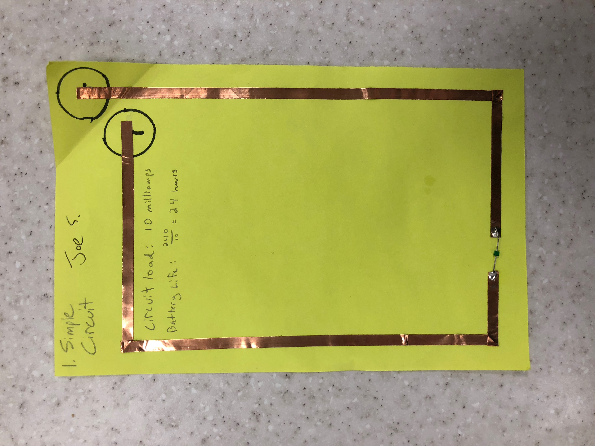
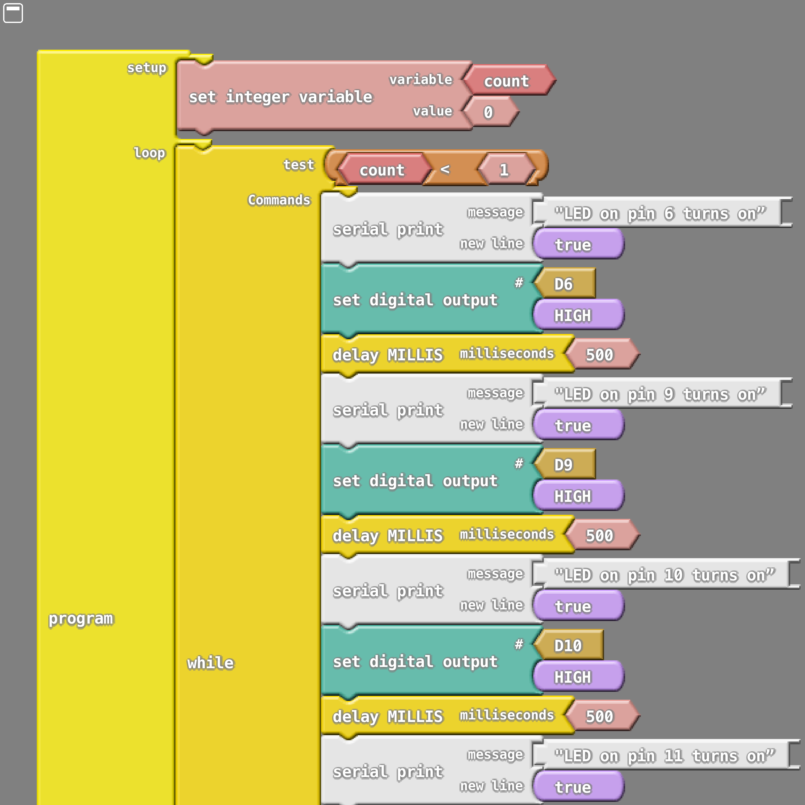
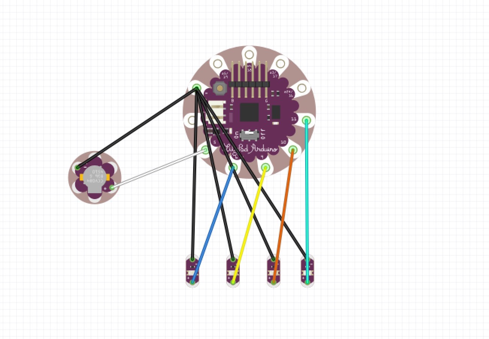

Paper Circuits
A Simple Way of Teaching Circuitry
To someone who has never tinkered with circuitry before, it can seem daunting to find a good place to begin before finding yourself tangled in wires. That is why paper circuits are a great place to start for beginners. All you will need are some few basic materials:
- Copper Tape
- Battery (Watch batteries may be the easiest to work with)
- LEDs
- Paper
- Something to write with
Your First Paper Circuits
The easiest circuit to build is a simple circuit to illuminate an LED, which is shown below
 .
Only two strips of copper tape are needed, and soldering an LED will link the two strips together. When it comes to creating turns in the strip, the tape should be folded over itself and never cut. If it is cut, the circuit will break. Also, it is important to note that the negative end of the battery and negative part of the LED must align or else the circuit will not work. There are many other types of simple circuits to be designed, such as a a circuit with a switch, a button, a circuit in parallel, and even a circuit with a pull tab.
{kind=link}
{kind=link}
{kind=link}
{kind=link}
Paper circuits can come with a few surprising difficulties. Aesthetically, laying down copper tape in a straight line can be difficult, especially if the tape has multiple kinks. A badly placed strip might cause a whole page to be scrapped. The pull tab can also be quite difficult to pull off smoothly, because the paper and tape edges might be caught while pulling.
Soldering can be a whole other beast to tame. It cane take multiple, very slow attempts to get the solder to look somewhat presentable, and even more attempts to get it done neatly and quickly. But, with practice, efficient soldering will come with ease.
Calculating circuit load is also an important part to electronics. In order to do this, information on the draw of the LEDs and the battery is necessary. The circuit load was calculated by multiplying the number of LEDs by 10 (which is the measure of the milliamps for this type of LED). Battery life can be calculated by dividing 240 (the battery capacity) by the circuit load. So the simple circuit above will run for about 24 hours before the battery dies.
Four LEDs and a buzzer
Entry-level Arduino tasks
This assignment helped me learn how to use the serial monitor ensure that certain chunks of code are being read. Each time an LED would light up, the serial monitor would output the message I wanted it to output, and then once all LEDs are lit a sound would play. Overall, this was a good way to reinforce arduino basics and good practices.
Here is a demo of the circuit.
This is the ardublock for the LEDs and buzzer. 

This is the fritzing diagram. 
The arduino code can be found here.
Lighting up LEDs with a button and light sensor
Entry-level Arduino tasks
This assignment was to create a circuit that would light up an LED when either a button was pressed, or when the light sensor detected darkness. This is fairly straightforward, however I did run into issues with the power connection from the light sensor to the Lilypad. It is important to note for future reference that the "S" on the light sensor must connect to the "+" on the Lilypad to ensure a properly working sensor.
Here is a demo of the circuit.
This is the ardublock for the LEDs and buzzer. 
This is the fritzing diagram.
The arduino code can be found here.